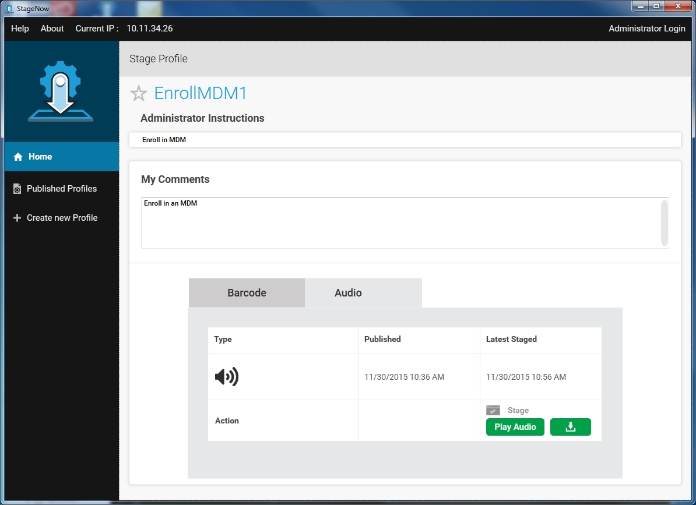
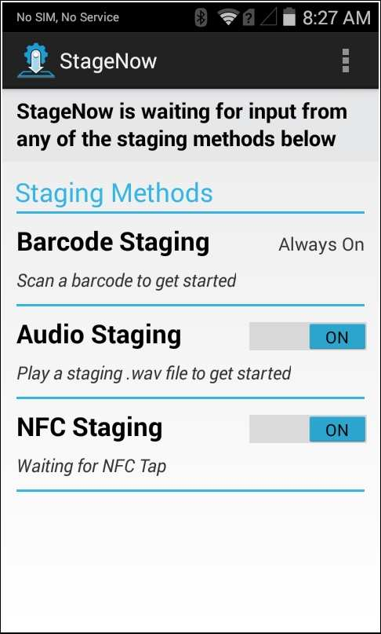
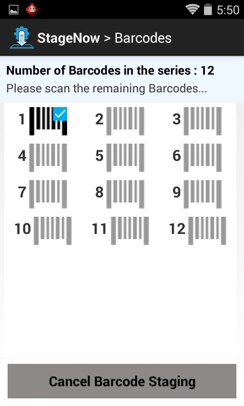
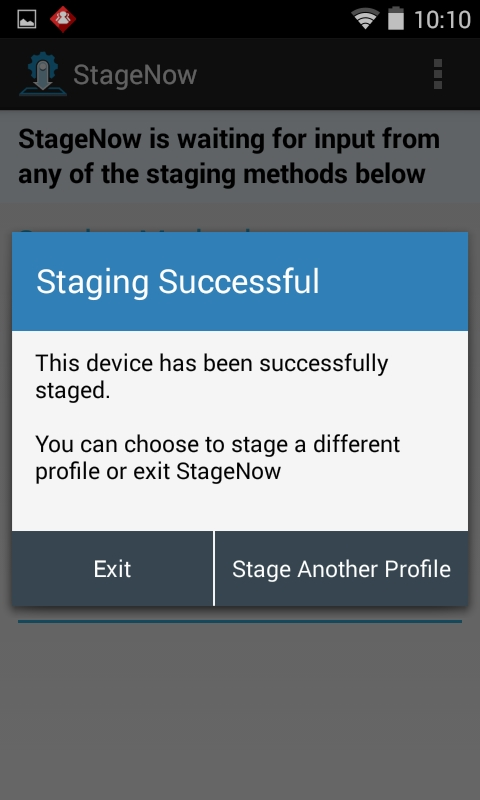
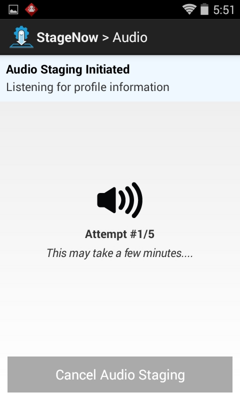
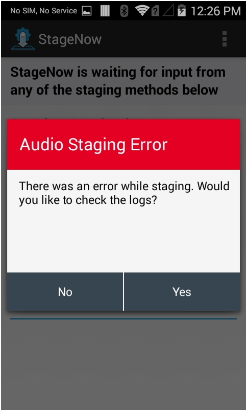
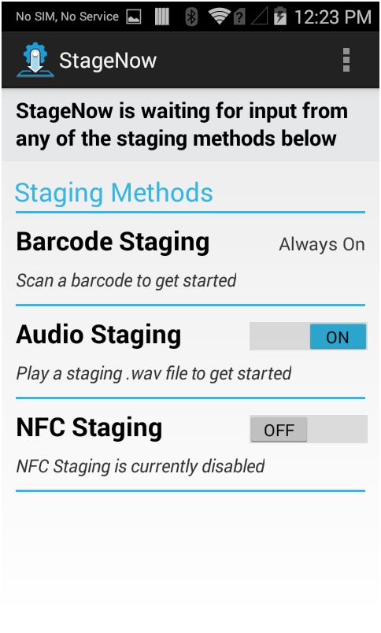

Introduction
This section provides information on how the staging operator can use the StageNow Workstation Tool and Client to select and read a StageNow bar code or NFC tag, or generate an audio profile, to configure the target devices and deploy the profile material to the devices.
If the device does not include the StageNow Client, use Rapid Deployment Client for configuration.
Selecting a Profile for Staging
To select a profile with which to stage the device:
On the host computer, select the StageNow icon from the Start menu to open the Workstation Tool. The Staging Operator home screen appears. See Home Screen for field descriptions.

Select a profile with which to stage the device(s).
Selecting Staging Material
Selecting Barcode or NFC Staging Material
This method of staging writes the configuration information from the selected profile into bar codes or NFC tags that the client devices read in order to initiate staging.
Select the Barcode or NFC tab.

If desired, enter operator comments in the My Comments field.
Select the material with which to stage the device, or choose Select All to select all material offered.
Select Stage to generate a PDF of the staging material.

Selecting an Audio File for Staging
This method of staging writes the configuration information from the selected profile into an audio file. Play the audio file in the vicinity of the client devices in order to initiate staging on these devices.
Select the Audio tab. If this is the first time using this feature, a tour provides help screens that specify technical and environmental requirements for audio staging.
Progress through the instruction screens and select DONE to dismiss the tour.

Select Play Audio to play the audio staging material in order to stage the devices. See Audio Staging for information on preparing the client to receive the audio file.

If desired, select the Download icon to download the audio file to the host computer.

Navigate to the folder in which to place the audio file and select Save.
Device Staging
On the device, select the StageNow icon to launch the StageNow Client.
Note: The StageNow Client requires the DataWedge profile to read bar code data, however restoring DataWedge discards the current StageNow configuration. If StageNow can not scan bar codes after restoring DataWedge, exit and re-launch the StageNow Client on the device.

The application lists the available staging methods.

Note:
MC40 devices do not support NFC, and display the following text for NFC Staging section: Unavailable, No NFC Reader Detected.
Bar Code Staging
To deploy the selected profile to the device via staging bar codes:
The Barcode Staging option is always on. Scan the bar code(s) printed from the StageNow Workstation Tool.

The screen indicates the bar codes scanned via a check mark, and the bar codes left to scan. Continue scanning all staging bar codes.
Upon successful deployment, the device displays the following screen.

If errors occur during deployment, the following pop-up appears. Select Yes to view Logs for troubleshooting.

Audio Staging
To deploy the selected profile to the device via an audio file:
On the client devices to stage, set the Audio Staging option to On.
Place the devices near the speaker of the host computer that will play the audio .wav file.
Note:
For best results, use a desktop speaker in a quiet environment, and ensure there are no obstructions between the speaker and the devices.
Play the audio .wav file to initiate staging on the devices.

The client attempts up to 5 times to stage. If staging does not occur after the fifth attempt, there is an error in audio transmission and the following error popup appears. Select Cancel to cancel staging, Try Again to continue the staging attempts, or Help for audio staging tips.

Upon successful deployment, the device displays the success screen.
If errors occur during deployment, the following pop-up appears. Select Yes to view Logs for troubleshooting.

NFC Staging
NFC staging requires that the client device is equipped with an NFC reader.
To deploy the selected profile to the device via NFC tag:
On the client devices to stage, set the NFC Staging option to On.

Read the NFC tag containing the exported profile data. Refer to the NFC documentation for the appropriate method. The client device returns to the previous application while it processes the tag.
Upon successful deployment, the device displays the success screen.
If errors occur during deployment, the following pop-up appears. Select Yes to view Logs for troubleshooting.

Staging Wait Conditions
The following pop-up screens can appear during staging, indicating the device is performing an operation and that staging will complete when it is done.
Initializing
Upon a device reboot, MX Framework requires up to 2 minutes to initialize in order to prepare for staging. If staging is initiated during this time, the StageNow Client indicates this via the following pop-up.

Acquiring IP
The following pop-up appears when the device is acquiring an IP address. This is typically seen during scan-and-dock, when the operator scans a bar code and places the device in an Ethernet cradle. Staging pauses until the device acquires the IP address while it performs network operations, such as downloading a file from the StageNow staging server.

Downloading
The following pop-up indicates that the client is processing a staging profile that contains a setting to download some content from the staging server (particularly an OS update package).

StageNow Client Menu
In the StageNow application, select the three vertical dots at the top right of the window to open the StageNow menu.

Last Staging Error
If staging fails, a screen appears indicating this.
To review the log to determine the cause of the error, select Yes from the staging failure screen, or from the StageNow Client menu, select Last Staging Error.

Locate the error(s) in the log. Refer to the characteristic-error or parm-error in the log contents.
Note:
The Last Staging Error screen displays content only if there are errors in the staging operation. If the staging operation is successful, this screen is empty.
Log Path
To configure the log file path, select the menu icon and select Log Path.

The Log Path window opens.

Enter the new path and select Done to update the path, or cancel to retain the existing path.
View Client Info
Select View Client Info to view software version information for the device.

Use this screen to determine whether your device has full or partial StageNow feature functionality.
Full Functionality - the OSx Version is the same as the MXMF Version.
Partial Functionality - the OSx Version is less than the MXMF Version. See the Feature Compatibility section of the specific Setting Types to determine if your device supports that feature.
No Functionality - no OSx Version.
Audio Staging Help
Select Audio Staging Help for tips for successful audio staging. Select Dismiss on any screen to dismiss the help.


Rapid Deployment Client
Jelly Bean devices and certain KitKat devices include Rapid Deployment (RD) Client rather than StageNow Client. For staging, these devices scan StageNow-generated bar codes using the RD Client. This connects the client to a network, installs MX and StageNow on the device, and launches StageNow to stage/configure the device using the settings specified in the StageNow Workstation Tool. Due to the older OS, these devices only support partial StageNow functionality.
Specifically, to stage a device that includes RD Client:
The administrator uses the StageNow Workstation Tool to generate RD or StageNow profile bar code(s).
The operator uses the device to scan the bar code(s). This downloads and installs other device components, including MX Framework and the StageNow Client.
The device reboots, and then StageNow Client automatically launches and completes the staging process in order to apply the profile settings.
Note:
This staging process done via the RD Client does not apply to rebranded devices.